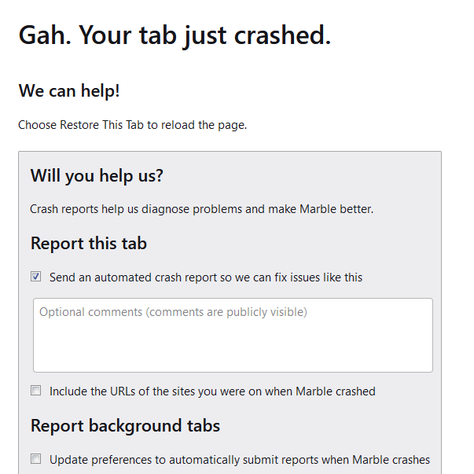
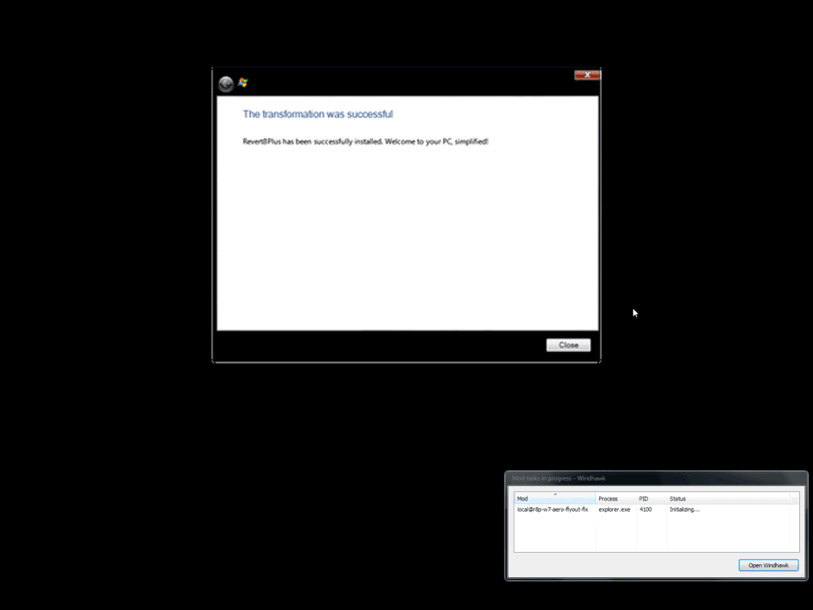

don't use Revert8Plus v4, DIY instead!
before I start...
This is not an attack against Teknix or his project (nor was it made because his transformation pack is more popular than mine). He has done incredible things, and it is insane what he has accomplished with Revert8Plus. I even suggest helping him financially if you can here.
But despite the incredible work put into it, Revert8Plus has caused problems for developers and its users.

the growing issues
Revert8Plus V4 was never finished software (build 1137 is the last build that was marked as the 'latest', while the rest were marked as 'pre-release'), and with that, certain features were left unfinished or broken (e.g. logon screen issues, display settings refusing to launch, or the 'Custom' button in the installer not working due to not being finished in time for the deadline).
This is a pretty small issue, right? Not quite. With unfinished software, you have buggy code, and the buggy code in question (Registry Redirect) would cause things to break for the user (Firefox forks being the main focus). Those same users would blame those forks instead of Revert8Plus due to the mentality that "transformation Packs only modify how Windows looks, so it must be the fork's fault."

use old tweaking software, lose your OS!
"B-but... it works fine on my machine!™"
The fact that you can get a working install at all is impressive. Why so? Well, Revert8Plus's last update was in February 2025, when the latest versions of OpenGlass & Legacy were 1.3 and 1.4 (for clarification, as of writing this, the OpenGlass Standard repo was archived, and Legacy is at version 2.4.1.2083).
A lot has changed since then, mainly Microsoft altering how some things are handled inside DWM. With this, ALTaleX531 had to make an announcement about dropping support for 24H2 for the time being and fixing it later. Revert8Plus users were not aware of this, which left many of them playing a game of luck with DWM and whether they could use their PC or not.
And, of course, this issue is still present to this day on the latest Revert8Plus build as of me writing this blog article.
With each passing month, the number of issues increases thanks to monthly updates changing how things work internally, while the tools used in Revert8Plus become older and more outdated by the day.
...the solution?
Sadly, there is no perfect solution if you want something that does everything for you automatically and claims to survive updates (not even my 21H2to7 Transformation Pack is immune to Microsoft screwing things up).
But luckily, the "do it yourself" method always exists, and if you don't care about having your OS slightly inaccurate (which if you were using Revert8Plus, you didn't care about that), you could get what Revert8Plus offered and more!
so how do I DIY my own 10/11to7?
As making a guide to create a complete 10to7 or 11to7 would get outdated pretty quickly, I'm only going to give the basic advice on getting a basic *to7 running.
To start, you need the following software, which Revert8Plus uses most of:
- Windhawk by Ramen Software
- OpenGlass by ALTaleX531
- SecureUxTheme by namazso
- Aero10 (Recommended for Windows 10 users) by vaporvance
- Aero11 (Recommended for Windows 11 users, however works on Windows 10) by SandTechStuff
- StartIsBack++ / StartAllBack / explorer7 (for the Windows 7 taskbar/start menu look and feel)
If you only want the glass look of Windows 7 but not the frames or
the rest, you can just download and install
OpenGlass
and use this
registry file for a
glassy Aero-like title bar (Note: it will import items in
HKEY_LOCAL_MACHINE in the registry).
If you wanna go crazy with it, you could install Windhawk and the Accent Color Sync mod to have more color customization.
But if you want to go further, you would need to install SecureUxTheme or any other alternative, as Microsoft does not allow you to use third-party themes by default.
After you've installed SecureUxTheme, you need to copy the
Aero10/11 theme into
%systemroot%\Resources\Themes and then run the .theme
file, which will greet you with a weird Windows 7 look. This can
be fixed by adding the DWORD "CaptionButtons" in
HKEY_LOCAL_MACHINE\SOFTWARE\Microsoft\Windows\Dwm
or
HKEY_CURRENT_USER\SOFTWARE\Microsoft\Windows\Dwm
and setting the value to 2. If you want everything
done, you can import
this registry file
(Note: it will import items in
HKEY_LOCAL_MACHINE in the registry). After logging
out and back in, your system will look almost like Windows 7
Windhawk
This section is going to be a list of mods required for a basic Windows 7 skin:
- Aerexplorer by Aubymori (Note: Windows 11 users have to use a fork of the mod made for Windows 11, which can be found here, and 21332's ExplorerFrame.dll for the mod to work correctly)
- Resource Redirect by m417z (with the Pane7 Icon Pack that can be found in the mod's settings)
- Accent Color Sync by CatmanFan / Mr._Lechkar
- Eradicate Context Menus by Aubymori (Note: this won't remove the Windows 11 context menus. You need to apply the tweak to remove them yourself)
- Legacy File Copy by rounk-ctrl
- Fix Basic Caption Text by Aubymori
- Windows 7/8.x Alt+Tab Loader by Aubymori (Note: you also need Windows 7's AltTab.dll)
Registry Tweaks
You need to perform some changes to the registry to get a good looking 7 skin (Note: before applying these tweaks, make a backup of those locations, otherwise you won't be able to revert back some of these changes):
- OpenGlass tweaks (Already applied)
- WindowMetrics (Borders, titlebar and button sizes)
- System Sounds (Note: Not all sounds will be present by default on 11. So you have to replace the %systemroot%\Media folder with this one)
- Colors (Windows 7 colors, both normal and desktop colors)
Extras
Here are some extras that can be applied to your install:
- Windows 7 Cursors
- Aero pointer shadow which can be enabled in main.cpl > Pointers > "Enable pointer shadow".
- Restoring Control Panel Pages/Links
- Windows 7 Colors in the Windows 7 Personalization page (Note: this will require themecpl7.dll inside System32)
- You can find even more tweaks on sites like WinClassic and other similar forum pages.
conclusions
In conclusion, software like Revert8Plus or 21H2to7, no matter how great they can be, will always carry the risk of damaging your OS. This risk arises when Microsoft inevitably updates one of the core components in Windows, potentially causing the tweaking tools to suddenly break. In the case of Revert8Plus, this has already happened, and since Teknix is currently focused on V5, this flaw will only get fixed when V5 is released.
In the other hand, doing things yourself might seem difficult, but once you get it set up, it becomes easier and provides more customization options, including custom themes, custom icons, and much more, as shown in these examples:


You can get really creative with DIY setups if you try hard enough, I recommend you try doing one yourself! You'll surely learn something along the way too.